<!DOCTYPE html>
<html lang="pt-BR">
<head>
    <meta charset="UTF-8">
    <meta http-equiv="X-UA-Compatible" content="IE=edge">
    <meta name="viewport" content="width=device-width, initial-scale=1.0">
    <title>GODpedia</title>
    <link rel="stylesheet" href="../css/reset.css">
    <link rel="stylesheet" href="../css/adm_perfil_side_bar.css">
    <link rel="preconnect" href="https://fonts.googleapis.com">
    <link rel="preconnect" href="https://fonts.gstatic.com" crossorigin> <!--Link font deuses-->
    <link href="https://fonts.googleapis.com/css2?family=MedievalSharp&display=swap" rel="stylesheet">
    <link rel="preconnect" href="https://fonts.googleapis.com"> <!--Adicionando a fonte da logo -->
    <link rel="preconnect" href="https://fonts.gstatic.com" crossorigin> <!--Adicionando a fonte da logo -->
    <link href="https://fonts.googleapis.com/css2?family=Sancreek&display=swap" rel="stylesheet">  <!--Adicionando a fonte da logo -->
</head>
<body class="flex-col-center">
    <header class="flex-row-between">
        <div class="header-items flex-row-between">
            
            <div class="container-search flex-row-center">
               <input class="search-input" type="text"> 
               
            </div>
        </div>
        <div class="header-items flex-row-between">
            
            
        </div>
    </header>
    <main>
        <div class="container-content-page flex-row-between">
            <aside class="sidebar-menu-adm flex-col-between">
                <figure class="flex-col-center">
                    
                    <h2 id="adm-name">Administrador</h2>
                </figure>
                <ul class="sidebar-options">
                    <li>Editar perfil</li>
                    <li>Mudar senha</li>
                    <li>Editar Categorias</li>
                    <li>Editar deuses</li>
                    <li>Sair</li>

                </ul>
            </aside>
           
        </div>
        

    </main>
    <footer></footer>
    
</body>
</html>